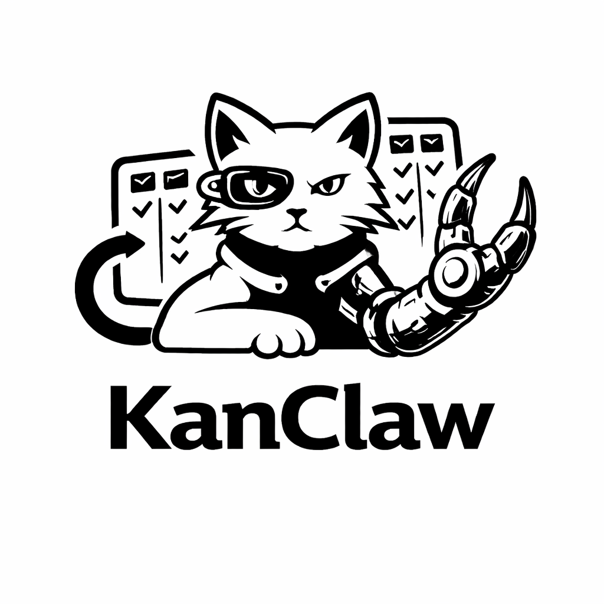

✅ Start here
Getting Started
Clone the repo, configure .env, initialize Prisma, and launch the app.

Everything you need to run, customize, and extend KanClaw: architecture, setup flows, product map, and implementation references.
Built for developers and AI-native teams who want local-first reliability, faster execution loops, and clean project visibility.
Clone the repo, configure .env, initialize Prisma, and launch the app.
Understand frontend layers, data flow, integrations, and runtime boundaries.
Reference anti-slop visual principles and implementation constraints.
/frontend — Next.js app/screenshots — README visual assets/docs — landing and static docs